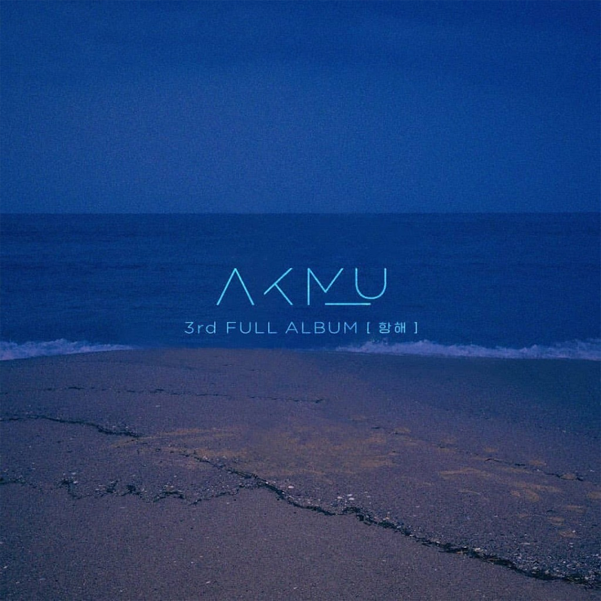

안녕하세요 라보엠입니다.
오늘은 악동뮤지션(이하 악뮤)의 명곡 '어떻게 이별까지 사랑하겠어, 널 사랑하는 거지'에 대해 소개해드리려고 합니다.
이 노래는 2019년 9월 발매된 악뮤의 3집 정규앨범 '항해'의 타이틀곡입니다. 이찬혁이 작사, 작곡을 직접 했으며, 사랑과 이별의 복잡한 감정을 아름답게 표현한 곡으로 많은 사랑을 받았습니다.

악뮤 어떻게 이별까지 사랑하겠어, 널 사랑하는 거지
악뮤 어떻게 이별까지 사랑하겠어, 널 사랑하는 거지 가사
1.
일부러 몇 발자국 물러나
내가 없이 혼자 걷는 널 바라본다
옆자리 허전한 너의 풍경
흑백 거리 가운데 넌 뒤 돌아본다
그 때 알게 되었어
난 널 떠날 수 없단 걸
우리 사이에 그 어떤 힘든 일도
이별보단 버틸 수 있는 것들이었죠
어떻게 이별까지 사랑하겠어
널 사랑하는거지
사랑이라는 이유로 서로를 포기하고
찢어질 것 같이 아파할 수 없어 난
2.
두 세번 더 길을 돌아갈까
적막 짙은 도로 위에 걸음을 포갠다
아무 말 없는 대화 나누며
주마등이 길을 비춘 먼 곳을 본다
그 때 알게 되었어
난 더 갈 수 없단걸
한 발 한 발 이별에 가까워질 수록
너와 맞잡은 손이 사라지는 것 같죠
어떻게 이별까지 사랑하겠어
널 사랑하는 거지
사랑이라는 이유로 서로를 포기하고
찢어질 것 같이 아파 할 수 없어 난
어떻게 내가 어떻게 너를
이 후에 우리 바다처럼 깊은 사랑이
다 마를 때까지 기다리는 게 이별일텐데
어떻게 내가 어떻게 너를
이 후에 우리 바다처럼 깊은 사랑이
다 마를 때까지 기다리는 게 이별일텐데
이 곡의 가장 큰 매력은 가사에 있습니다. "어떻게 이별까지 사랑하겠어, 널 사랑하는 거지"라는 가사는 사랑하는 사람과 헤어지는 상황에서 느끼는 복잡한 감정을 잘 표현하고 있습니다. 사랑하기 때문에 오히려 헤어질 수밖에 없는 상황, 그리고 그 과정에서 느끼는 아픔을 섬세하게 담아냈습니다. 또, "우리 바다처럼 깊은 사랑이 다 마를 때까지 기다리는 게 이별일 텐데"라는 가사는 이별의 과정을 바다가 마르는 것에 비유하여 표현했습니다. 이는 이별의 고통이 얼마나 길고 힘든 과정인지를 효과적으로 전달합니다.
감상 후기
이 노래는 발매 직후 각종 음원 차트 1위를 석권하며 대중들의 큰 사랑을 받았습니다. 특히 최근 노벨문학상을 받은 소설가 한강이 이 노래에 대해 언급한 것이 화제가 되어 다시 한 번 차트 역주행을 하기도 했습니다.
악동뮤지션 특유의 맑고 깨끗한 음색과 조화로운 화음이 돋보이는 곡입니다. 잔잔한 멜로디와 함께 점점 고조되는 감정선, 그리고 후반부의 감성적인 보컬 표현이 인상적입니다. 이 곡은 단순히 이별의 아픔을 노래하는 것을 넘어, 사랑의 본질에 대한 깊은 고민을 담고 있습니다. 사랑하는 사람을 위해 이별을 선택해야 하는 상황, 그리고 그 과정에서 느끼는 복잡한 감정들을 섬세하게 표현했습니다.
악동뮤지션의 '어떻게 이별까지 사랑하겠어, 널 사랑하는 거지'는 단순한 대중가요를 넘어 많은 이들의 마음을 울리는 감동적인 노래입니다. 이별의 아픔을 겪은 사람들에게 위로가 되는 동시에, 사랑의 의미에 대해 다시 한 번 생각해보게 만드는 깊이 있는 곡입니다. 좋은 가을날 좋은 노래와 함께 시간을 보내시길 바라며 이 노래를 추천드립니다.